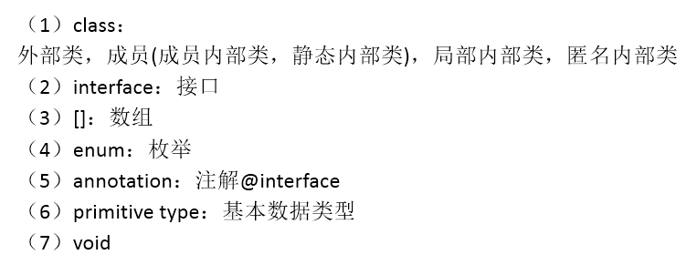
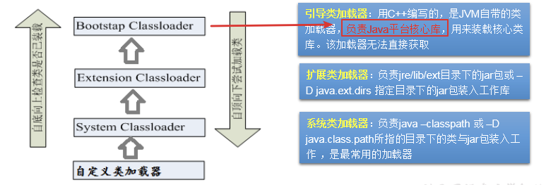
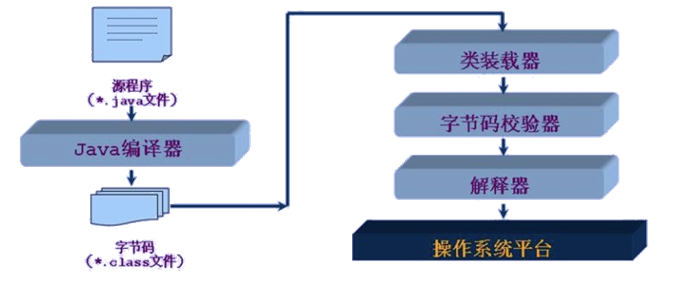

1 概述
关于反射的理解：Reflection（反射)是被视为动态语言的关键，反射机制允许程序在执行期借助于Reflection API取得任何类的内部信息，并能直接操作任意对象的内部属性及方法。
框架 = 反射 + 注解 + 设计模式。
体会反射机制的“动态性”：
//体会反射的动态性
@Test
public void test2(){
for(int i = 0;i < 100;i++){
int num = new Random().nextInt(3);//0,1,2
String classPath = "";
switch(num){
case 0:
classPath = "java.util.Date";
break;
case 1:
classPath = "java.lang.Object";
break;
case 2:
classPath = "com.atguigu.java.Person";
break;
}
try {
Object obj = getInstance(classPath);
System.out.println(obj);
} catch (Exception e) {
e.printStackTrace();
}
}
}
/*
创建一个指定类的对象。
classPath:指定类的全类名
*/
public Object getInstance(String classPath) throws Exception {
Class clazz = Class.forName(classPath);
return clazz.newInstance();
}反射机制能提供的功能：
相关API：
- java.lang.Class:反射的源头
- java.lang.reflect.Method
- java.lang.reflect.Field
- java.lang.reflect.Constructor
- ….
2 Class类的理解与获取Class的实例
类的加载过程：
- 程序经过javac.exe命令以后，会生成一个或多个字节码文件(.class结尾)。
- 接着我们使用java.exe命令对某个字节码文件进行解释运行。相当于将某个字节码文件加载到内存中。此过程就称为类的加载。
- 加载到内存中的类，我们就称为运行时类，此运行时类，就作为Class的一个实例。换句话说，Class的实例就对应着一个运行时类。
- 加载到内存中的运行时类，会缓存一定的时间。在此时间之内，我们可以通过不同的方式来获取此运行时类。
获取Class实例的几种方式：（前三种方式需要掌握）
//方式一：调用运行时类的属性：.class
Class clazz1 = Person.class;
System.out.println(clazz1);
//方式二：通过运行时类的对象,调用getClass()
Person p1 = new Person();
Class clazz2 = p1.getClass();
System.out.println(clazz2);
//方式三：调用Class的静态方法：forName(String classPath)
Class clazz3 = Class.forName("com.atguigu.java.Person");
// clazz3 = Class.forName("java.lang.String");
System.out.println(clazz3);
System.out.println(clazz1 == clazz2);
System.out.println(clazz1 == clazz3);
//方式四：使用类的加载器：ClassLoader (了解)
ClassLoader classLoader = ReflectionTest.class.getClassLoader();
Class clazz4 = classLoader.loadClass("com.atguigu.java.Person");
System.out.println(clazz4);
System.out.println(clazz1 == clazz4);总结：创建类的对象的方式
- new + 构造器
- 要创建Xxx类的对象，可以考虑：Xxx、Xxxs、XxxFactory、XxxBuilder类中查看是否有静态方法的存在。可以调用其静态方法，创建Xxx对象。
- 方式三：通过反射
Class实例可以是哪些结构的说明：

3 了解ClassLoader
类的加载过程：

类的加载器的作用：
类的加载器的分类：

Java类编译、运行的执行的流程：

使用Classloader加载src目录下的配置文件：
@Test
public void test2() throws Exception {
Properties pros = new Properties();
//此时的文件默认在当前的module下。
//读取配置文件的方式一：
// FileInputStream fis = new FileInputStream("jdbc.properties");
// FileInputStream fis = new FileInputStream("src\\jdbc1.properties");
// pros.load(fis);
//读取配置文件的方式二：使用ClassLoader
//配置文件默认识别为：当前module的src下
ClassLoader classLoader = ClassLoaderTest.class.getClassLoader();
InputStream is = classLoader.getResourceAsStream("jdbc1.properties");
pros.load(is);
String user = pros.getProperty("user");
String password = pros.getProperty("password");
System.out.println("user = " + user + ",password = " + password);
}4 反射应用一：创建运行时类的对象
代码举例：
Class<Person> clazz = Person.class;
Person obj = clazz.newInstance();
System.out.println(obj);newInstance()：调用此方法，创建对应的运行时类的对象。内部调用了运行时类的空参的构造器。
要想此方法正常的创建运行时类的对象，要求：
- 运行时类必须提供空参的构造器。
- 空参的构造器的访问权限得够。通常，设置为public。
在javabean中要求提供一个public的空参构造器。原因：
- 便于通过反射，创建运行时类的对象。
- 便于子类继承此运行时类时，默认调用super()时，保证父类有此构造器。
5 反射应用二：获取运行时类的完整结构
我们可以通过反射，获取对应的运行时类中所有的属性、方法、构造器、父类、接口、父类的泛型、包、注解、异常等。
@Test
public void test1(){
Class clazz = Person.class;
//获取属性结构
//getFields():获取当前运行时类及其父类中声明为public访问权限的属性
Field[] fields = clazz.getFields();
for(Field f : fields){
System.out.println(f);
}
System.out.println();
//getDeclaredFields():获取当前运行时类中声明的所属性。（不包含父类中声明的属性
Field[] declaredFields = clazz.getDeclaredFields();
for(Field f : declaredFields){
System.out.println(f);
}
}
@Test
public void test1(){
Class clazz = Person.class;
//getMethods():获取当前运行时类及其所父类中声明为public权限的方法
Method[] methods = clazz.getMethods();
for(Method m : methods){
System.out.println(m);
}
System.out.println();
//getDeclaredMethods():获取当前运行时类中声明的所方法。（不包含父类中声明的方法
Method[] declaredMethods = clazz.getDeclaredMethods();
for(Method m : declaredMethods){
System.out.println(m);
}
}
/*
获取构造器结构
*/
@Test
public void test1(){
Class clazz = Person.class;
//getConstructors():获取当前运行时类中声明为public的构造器
Constructor[] constructors = clazz.getConstructors();
for(Constructor c : constructors){
System.out.println(c);
}
System.out.println();
//getDeclaredConstructors():获取当前运行时类中声明的所的构造器
Constructor[] declaredConstructors = clazz.getDeclaredConstructors();
for(Constructor c : declaredConstructors){
System.out.println(c);
}
}
/*
获取运行时类的父类
*/
@Test
public void test2(){
Class clazz = Person.class;
Class superclass = clazz.getSuperclass();
System.out.println(superclass);
}
/*
获取运行时类的带泛型的父类
*/
@Test
public void test3(){
Class clazz = Person.class;
Type genericSuperclass = clazz.getGenericSuperclass();
System.out.println(genericSuperclass);
}
/*
获取运行时类的带泛型的父类的泛型
代码：逻辑性代码 vs 功能性代码
*/
@Test
public void test4(){
Class clazz = Person.class;
Type genericSuperclass = clazz.getGenericSuperclass();
ParameterizedType paramType = (ParameterizedType) genericSuperclass;
//获取泛型类型
Type[] actualTypeArguments = paramType.getActualTypeArguments();
// System.out.println(actualTypeArguments[0].getTypeName());
System.out.println(((Class)actualTypeArguments[0]).getName());
}
/*
获取运行时类实现的接口
*/
@Test
public void test5(){
Class clazz = Person.class;
Class[] interfaces = clazz.getInterfaces();
for(Class c : interfaces){
System.out.println(c);
}
System.out.println();
//获取运行时类的父类实现的接口
Class[] interfaces1 = clazz.getSuperclass().getInterfaces();
for(Class c : interfaces1){
System.out.println(c);
}
}
/*
获取运行时类所在的包
*/
@Test
public void test6(){
Class clazz = Person.class;
Package pack = clazz.getPackage();
System.out.println(pack);
}
/*
获取运行时类声明的注解
*/
@Test
public void test7(){
Class clazz = Person.class;
Annotation[] annotations = clazz.getAnnotations();
for(Annotation annos : annotations){
System.out.println(annos);
}
}6 反射应用三：调用运行时类的指定结构
调用指定的属性：
@Test
public void testField1() throws Exception {
Class clazz = Person.class;
//创建运行时类的对象
Person p = (Person) clazz.newInstance();
//1. getDeclaredField(String fieldName):获取运行时类中指定变量名的属性
Field name = clazz.getDeclaredField("name");
//2.保证当前属性是可访问的
name.setAccessible(true);
//3.获取、设置指定对象的此属性值
name.set(p,"Tom");
System.out.println(name.get(p));
}调用指定的方法：
@Test
public void testMethod() throws Exception {
Class clazz = Person.class;
//创建运行时类的对象
Person p = (Person) clazz.newInstance();
/*
1.获取指定的某个方法
getDeclaredMethod():参数1 ：指明获取的方法的名称 参数2：指明获取的方法的形参列表
*/
Method show = clazz.getDeclaredMethod("show", String.class);
//2.保证当前方法是可访问的
show.setAccessible(true);
/*
3. 调用方法的invoke():参数1：方法的调用者 参数2：给方法形参赋值的实参
invoke()的返回值即为对应类中调用的方法的返回值。
*/
Object returnValue = show.invoke(p,"CHN"); //String nation = p.show("CHN");
System.out.println(returnValue);
System.out.println("*************如何调用静态方法*****************");
// private static void showDesc()
Method showDesc = clazz.getDeclaredMethod("showDesc");
showDesc.setAccessible(true);
//如果调用的运行时类中的方法没返回值，则此invoke()返回null
// Object returnVal = showDesc.invoke(null);
Object returnVal = showDesc.invoke(Person.class);
System.out.println(returnVal);//null
}调用指定的构造器：
@Test
public void testConstructor() throws Exception {
Class clazz = Person.class;
//private Person(String name)
/*
1.获取指定的构造器
getDeclaredConstructor():参数：指明构造器的参数列表
*/
Constructor constructor = clazz.getDeclaredConstructor(String.class);
//2.保证此构造器是可访问的
constructor.setAccessible(true);
//3.调用此构造器创建运行时类的对象
Person per = (Person) constructor.newInstance("Tom");
System.out.println(per);
}7 反射应用四：动态代理
代理模式的原理：使用一个代理将对象包装起来, 然后用该代理对象取代原始对象。任何对原始对象的调用都要通过代理。代理对象决定是否以及何时将方法调用转到原始对象上。
静态代理举例：实现Runnable接口的方法创建多线程。
Class MyThread implements Runnable{} //相当于被代理类
Class Thread implements Runnable{} //相当于代理类
main(){
MyThread t = new MyThread();
Thread thread = new Thread(t);
thread.start();//启动线程；调用线程的run()
}静态代理的缺点：
- 代理类和目标对象的类都是在编译期间确定下来，不利于程序的扩展。
- 每一个代理类只能为一个接口服务，这样一来程序开发中必然产生过多的代理。
动态代理的特点：动态代理是指客户通过代理类来调用其它对象的方法，并且是在程序运行时根据需要动态创建目标类的代理对象。
动态代理的实现需要解决的两个主要问题：
- 如何根据加载到内存中的被代理类，动态的创建一个代理类及其对象。
- 通过Proxy.newProxyInstance()实现
- 当通过代理类的对象调用方法a时，如何动态的去调用被代理类中的同名方法a。
- 通过InvocationHandler接口的实现类及其方法invoke()
代码实现：
interface Human{
String getBelief();
void eat(String food);
}
//被代理类
class SuperMan implements Human{
@Override
public String getBelief() {
return "I believe I can fly!";
}
@Override
public void eat(String food) {
System.out.println("我喜欢吃" + food);
}
}
class HumanUtil{
public void method1(){
System.out.println("====================通用方法一====================");
}
public void method2(){
System.out.println("====================通用方法二====================");
}
}
class ProxyFactory{
//调用此方法，返回一个代理类的对象。解决问题一
public static Object getProxyInstance(Object obj){//obj:被代理类的对象
MyInvocationHandler handler = new MyInvocationHandler();
handler.bind(obj);
return Proxy.newProxyInstance(obj.getClass().getClassLoader(),obj.getClass().getInterfaces(),handler);
}
}
class MyInvocationHandler implements InvocationHandler{
private Object obj;//需要使用被代理类的对象进行赋值
public void bind(Object obj){
this.obj = obj;
}
//当我们通过代理类的对象，调用方法a时，就会自动的调用如下的方法：invoke()
//将被代理类要执行的方法a的功能就声明在invoke()中
@Override
public Object invoke(Object proxy, Method method, Object[] args) throws Throwable {
HumanUtil util = new HumanUtil();
util.method1();
//method:即为代理类对象调用的方法，此方法也就作为了被代理类对象要调用的方法
//obj:被代理类的对象
Object returnValue = method.invoke(obj,args);
util.method2();
//上述方法的返回值就作为当前类中的invoke()的返回值。
return returnValue;
}
}
public class ProxyTest {
public static void main(String[] args) {
SuperMan superMan = new SuperMan();
//proxyInstance:代理类的对象
Human proxyInstance = (Human) ProxyFactory.getProxyInstance(superMan);
//当通过代理类对象调用方法时，会自动的调用被代理类中同名的方法
String belief = proxyInstance.getBelief();
System.out.println(belief);
proxyInstance.eat("四川麻辣烫");
System.out.println("*****************************");
NikeClothFactory nikeClothFactory = new NikeClothFactory();
ClothFactory proxyClothFactory = (ClothFactory) ProxyFactory.getProxyInstance(nikeClothFactory);
proxyClothFactory.produceCloth();
}
}